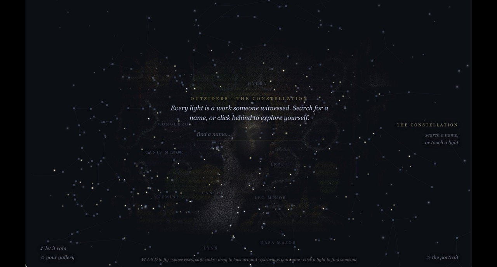

The Constellation Gallery
Where the movement sees itself.

The Immersive Experience ↗The immersive experience loads only where your device and connection can carry it.
Where the movement sees itself.

The Immersive Experience ↗The immersive experience loads only where your device and connection can carry it.
Outsiders · about
OUTSIDERS isn't a submission box. Someone makes something and shares it into the wave. Someone else — already trusted inside the community — stops, looks, and marks it :outsiders:. That mark is a witness: proof a real person paid attention and vouched it belongs. Nothing here is counted, ranked, or approved by a gatekeeper. A work is on this wall because it was seen.
Every work carries two threads back into the community. Follow either one, and the wall reshapes around that person's own constellation.
To be an outsider is to make work that lives outside the gallery, the feed algorithm, the marketplace — visible only if someone chooses to look. That choice is the whole economy here. Making the work is the first act of being outside. Being witnessed is the second, and it's the one that completes it — someone else, already vouched for themselves, saw it and said so. Everything on this wall is built out of that second act: not what was made, but what was seen.
Search a name to follow their thread. Tap the ⬡ on any work to keep it — build your own curated gallery, private to your browser, yours to revisit whenever you come back.
This wall isn't uploaded to — it's read. Every 6 hours, an automated crawl re-reads the OUTSIDERS wave on 6529, checks who's inside the community's chain of trust, and rebuilds the gallery from whatever's been witnessed since. Nobody manages it by hand, and nobody has to remember.